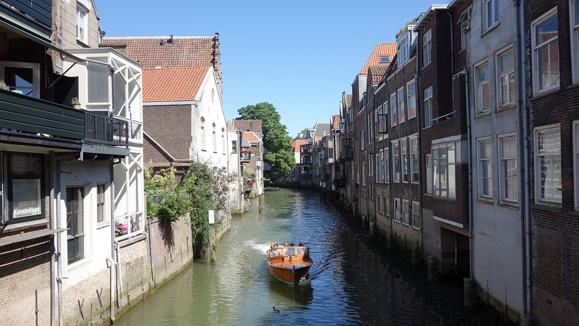
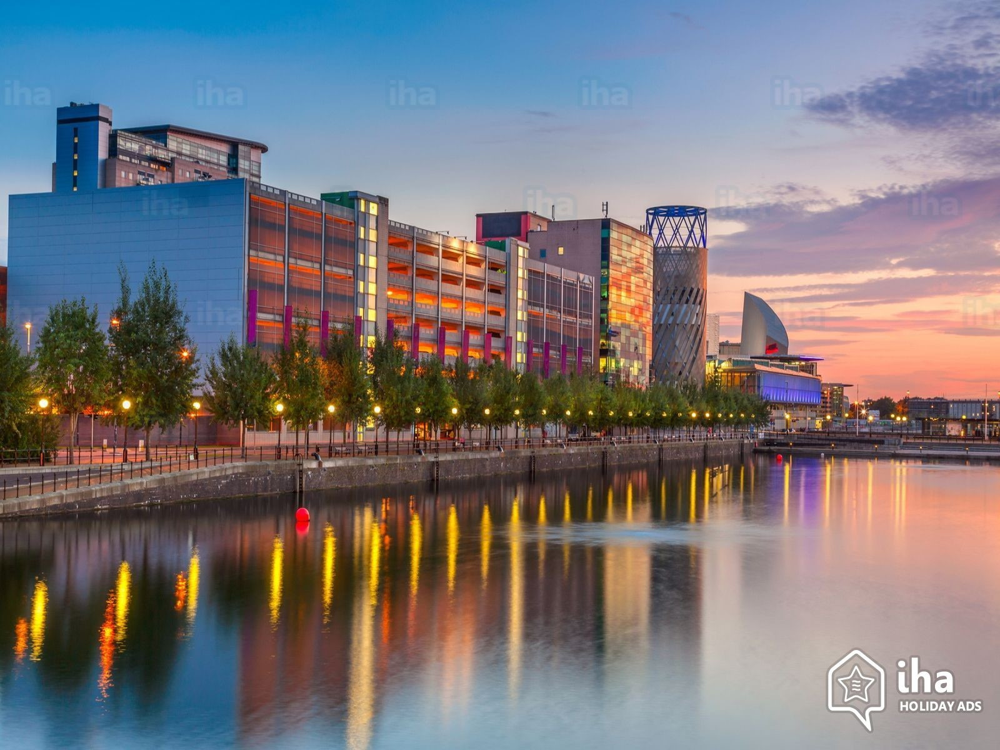
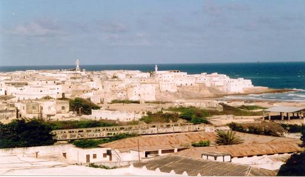

Growing up, I moved from one house to another for several different reasons. Sometimes, it was due to discrimination and racial abuse from the community and other times it was the lack of community and our parents not wanting to raise me there. Some of the places I lived in were wonderful, where else, other places were horrible. However, this gave me the opportunity to travel to lots of different places and experience different cultures. Some of the places I've been to are:
Most people don't know this about me, but I was born in the Netherlands, Dordrecht. However, I left the country at the age of 3 so I can't speak or understand the language. I also don't have any memory of it, so I don't remember how the place looked. However, I would love to re-visit the country to see where I was born. From what my parents told me about the place, it is very beautiful. However, back then, a lot of people were very close minded and racist, so it was difficult for my parents to live there which caused them to move to England.
I lived in England for most of my life. I spent my primary school years, college years, and my University years here in Manchester. Manchester is such a beautiful and multi-cultural place that I enjoy living in. However, throughout the twelve years I lived here in Manchester, it had made huge improvements from a community point of view as well as appearance wise.
Egypt is where I spend my high school years. From the age of 11 till the age of 16. It was where I learnt the Arabic language; by going to an Arabic school. It was very difficult to learn Arabic since it is a very complex language and its grammar is more complicated than the English grammar. However, I found it to be interesting and I ended up enjoying learning the language. My years sent in Egypt were very eventful and filled with amazing memories. It was a very peaceful place where crime barely took place. This was a good thing since I was able to run around the place without my parents worrying about me. There are however, big differences between England and Egypt. Some of the major differences are:
Somali. My home country. Such a beautiful and vibrant place. Filled with lovely and kind people. I went to Somalia on one of my summer holidays while living in England. When I went there, my expectations for Somalia was shattered. I was expecting it to be a third world country where people are sad and struggling. However, the truth surprised me. I honestly don't think I have ever seen people happier than the people I met in Somalia. Yes, there were lots of real struggle, but regardless, they always had a smile on their face. Another thing that shocked me was the food there. They had the most amazing food I have ever tasted in my life. The strangest thing was the way they made the food. They didn't have any fire or gas. They would use coal, wood, and rocks to start the fire. Yet the food would taste and look phenomenal. What I loved most was meeting all my relatives and getting to know my country and its people. I would definitely like to go back there again in the near future and I hope it happens soon.
